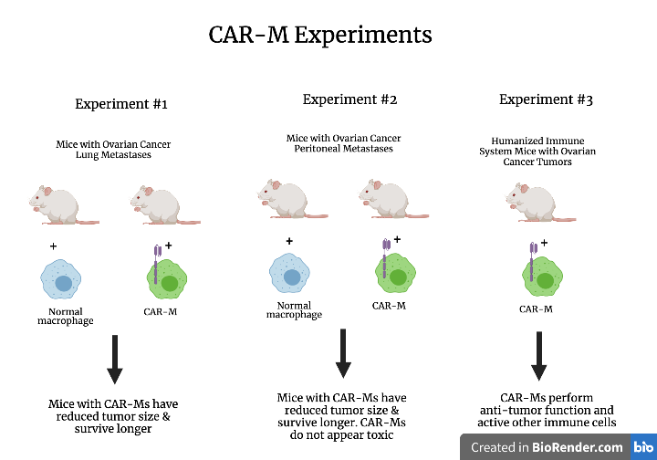

Scientists knew as early as the 1950s and 1960s that tumors were recognized by and interacted with the immune system. Half a century later, immunotherapies – treatments that train and arm the immune system to battle cancer – have come into focus as some of the most promising treatment options.
One such immunotherapy is chimeric antigen receptor (CAR)-T cell therapy, which has revolutionized the treatment of blood cancers (a.k.a. liquid cancers), such as leukemia and lymphoma. However, CAR-T therapy has performed poorly on solid tumors, such as breast cancer or lung cancer, primarily because T cells, a type of immune cell, are not able to infiltrate solid tumors. Recently, a team of scientists sought to overcome this problem by creating a CAR therapy using a different type of immune cell – macrophages.
In the year 1987, Dr. Zelig Eshhar, an Israeli immunologist at the Weizmann Institute of Science, produced the first chimeric antigen receptor (CAR) for T-cells. This receptor was genetically engineered into the T cells – which are a type of white blood cell that play a key role in our immune responses – and made the T-cells target cancer cells for attack and killing. These first-generation CAR-T cells produced by Eshhar did not prove clinically effective, largely because the T cells failed to produce more of themselves and did not persist for very long within the patient.
Nonetheless, research into CAR-T cells continued and, since then, multiple generations of CAR-Ts have arisen, each with improvements over the first-generation. Second generation CAR-T cells, which have improved proliferation and persistence within patients, are the basis for currently approved CAR-T cell therapies.
In 2011, Dr. David Porter, of the University of Pennsylvania, reported the first successful treatment of cancer patients with CAR-T cells. Two of three patients in the study, all of whom had either treatment-resistant or relapsed chronic lymphocytic leukemia (a type of blood cancer), were cured.
The true first big success for CAR-T cells, however, came shortly after, as clinicians at the University of Pennsylvania, Memorial Sloan Kettering Cancer Center, and the National Cancer Institute reported that, in a clinical trial of 30 children and adults with either relapsed or treatment-resistant acute lymphoblastic leukemia (another type of blood cancer) treated with CAR-T cells, 90% had achieved complete remission.
One of the first pediatric acute lymphoblastic leukemia patients treated with CAR-T cells during this clinical trial in the spring of 2012 was 7-year-old Emily Whitehead of Philipsburg, PA., who was dying and no longer responding to treatment. Thanks to the CAR-T cell therapy, Emily is still alive today, and her parents have set up a foundation – the Emily Whitehead Foundation – to fund innovative childhood cancer treatments like the one their daughter received.
Perhaps the greatest day for the CAR-T cell field so far was August 30th, 2017, when the FDA approved the first CAR-T cell immunotherapy, Kymriah (Novartis Pharmaceuticals), for use in patients up to 25 years of age with acute lymphoblastic leukemia that does not respond to therapy or is relapsed. Since then, the FDA has approved a second CAR T-cell therapy, Yescarta (Kite Pharma), on October 18th, 2017, to treat adults with certain types of B-cell lymphomas who have not responded to treatment or have relapsed. Several other CAR-T cell therapies are currently in different stages of research and development.
The currently approved CAR-T cell therapies (second generation CARs) are produced by taking T cells from a patient’s blood, modifying them in a lab, and then putting them back into the patient’s bloodstream. Specifically, the patient’s T cells are engineered in the lab to contain a special receptor, the CAR, which is partially inside the T cell and partially outside it.
The CAR contains an antibody portion on the outside of the T cell. This antibody portion allows the CAR-T cell to bind to an antigen (a molecule to which antibodies bind) found specifically on the surface of the tumor cell. In the case of leukemias and lymphomas, the antigen is CD19, which is typically expressed on the surface of blood cancer cells. The antibody portion of the CAR is like the GPS the cell uses to know if it has reached its destination (a cancer cell) or not.
The CAR, in its second generation, also includes a co-stimulatory region inside the cell, which, when the CAR-T cell binds to the tumor cell, will activate the T cell, help it to produce more of itself and survive, and tell it to perform its function of releasing enzymes that will kill the bound cancer cell.
The success of CAR-T cell therapies in blood, or liquid, cancers has not translated to solid tumors. One major reason for this is that CAR-T cells cannot infiltrate the solid tumors very well. Solid tumors have physical and chemical barriers that are designed to keep T cells out and, even if T cells are able to make it inside, they are met with a harsh and immunosuppressive environment that causes them to function improperly or die.
This knowledge led researchers to consider designing CAR therapies with immune cells that survive better within the solid tumors than T cells.
Michael Klichinsky, PharmD, PhD, of the University of Pennsylvania, decided to do just that – to try and place CARs onto immune cells that could survive and perform their functions well within solid tumors. Klichinsky identified macrophages – cells capable of phagocytosis (“eating up” other cells or particles) and which play a role in anti-tumor responses – as good candidates for this, since macrophages are already found within solid tumors.
A problem with this approach, however, was that macrophages are particularly resistant to genetic manipulation, which is needed in order to put the chimeric antigen receptor in them. Klichinsky was able to overcome this problem by finding a viral vector (a virus modified to deliver specific genetic material into the cell) that worked on macrophages and could deliver the genetic instructions for producing the CAR to them. While finally able to do it, Klichinsky told The Scientist that this process of finding a viral vector that could infect macrophages took him years.
The results of Dr. Klichinsky and his colleagues’ study were published in Nature Biotechnology in March of 2020 and detailed their efforts to test the function of so called CAR-macrophages (CAR-Ms) within three mouse models.
The group first engineered a CAR that would target tumors with HER2 on their surface and used a viral vector to put the CAR into human macrophages (isolated from blood), creating anti-HER2 CAR-Ms. HER2, which stands for human epidermal growth factor receptor-2, is found on the surface of tumor cells in a range of solid cancers, including breast, ovarian, and bladder cancers. The team then tested these CAR-Ms in three different experiments.
In the first experiment, mice received human ovarian cancer cells (which have HER2 on their surface) intravenously and developed metastases in their lungs. Some of these mice were given normal human macrophages and the rest of the mice were treated with human anti-HER2 CAR-Ms. The CAR-treated mice saw a significant reduction in the size of their tumors compared to the mice given normal macrophages and, although all of the mice eventually died, the CAR-treated mice survived for longer.
In the team’s second experiment, mice were injected with human ovarian cancer cells into their peritoneum (the membrane lining the abdominal cavity) and then treated with normal human macrophages or human anti-HER2 CAR-Ms. As in the first experiment, the mice treated with CAR-Ms had better tumor reduction and improved survival, as compared to mice treated with normal macrophages. The team also observed that the CAR-M treatment did not seem to produce toxic side effects in the mice that received them.
Finally, for their third experiment, the team evaluated the function of human anti-HER2 CAR-Ms within humanized immune system mice (mice that almost entirely lack mouse immune systems, and are injected with human cells, so as to model the human immune system within them). These humanized mice had human ovarian tumors growing within them. They found that, despite the solid tumor environment being a place where the immune system is suppressed, the CAR-Ms were able to perform their anti-tumor functions, whereas the normal macrophages were actually contributing to tumor growth. Perhaps the most exciting finding was that the CAR-Ms actively countered the tumor’s immune suppression by activating other immune cells within the tumor, promoting inflammation to fight the tumor.
Since the paper’s publication, CARISMA Therapeutics Inc., co-founded by Klichinsky, has been attempting to bring this CAR-M technology to the clinical setting for use in cancer patients with solid tumors. On March 18th, 2021, CARISMA announced that the first patient had been dosed in the Phase 1 clinical trial for HER2-targeted CAR-Ms.
It remains to be seen whether this CAR-M treatment will prove effective in human cancer patients with solid tumors, but, for now, the future of CAR therapies looks bright.
This article was made using Idyll and is hosted via Github Pages.
The references for the pictures used in this article are below:
Bone marrow transplants – timeline. (n.d.). Science Learning Hub. Retrieved May 6, 2021, from https://www.sciencelearn.org.nz/resources/1971-bone-marrow-transplants-timeline
CAR T Cells. (n.d.). EurekAlert! Retrieved May 6, 2021, from https://www.eurekalert.org/multimedia_prod/pub/169415.php
T Is for T Cell: The Science Behind Immunotherapy | Memorial Sloan Kettering Cancer Center. (n.d.). Retrieved May 6, 2021, from https://www.mskcc.org/news/t-cell-science-behind-immunotherapy
What is pooled testing? How lessons from the HIV epidemic could help fight the coronavirus. (n.d.). Retrieved May 6, 2021, from https://www.nbcnews.com/science/science-news/what-pooled-testing-how-lessons-hiv-epidemic-could-help-fight-n1232297